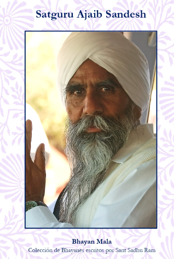

SantBani Bhajan Mala
Biblioteca · v1.1

SR BM
Sant Sadhu Ram Ji Bhajan Mala
SJ BM
Bayanes de los Maestros
SantBani Bhajan Mala necesita JavaScript para el modo oscuro y el funcionamiento sin conexión.